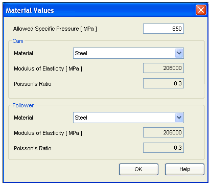
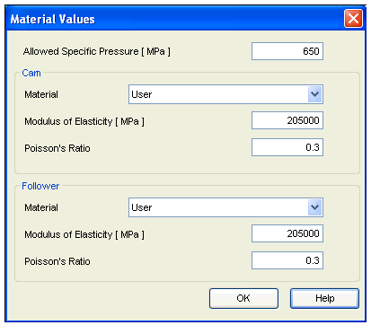

Cam Material selection
The Material button is given on Design Parameters tab to select the material of the Cam.
Click on this button, the Material Selection window will open.
You have to select the material of the Cam and the Follower.
SEER has given some standard materials for calculation purpose.
Using standard material
Simply select the material from respective material selection control. The values for Modulus of Elasticity and Poisson’s Ratio will be automatically displayed as per the material, which are stored in database. Remember when you are using SEER Standard material you cannot change these values. Only the value of Allowed Specific Pressure is always a User defined value.

User specific material
In case you want to enter your own values, then you have to select a User material from material selection control.
Now the entry field for Modulus of Elasticity and Poisson’s Ratio will get enabled and you can enter own values.
Only the value of Allowed Specific Pressure is always a User defined value.
